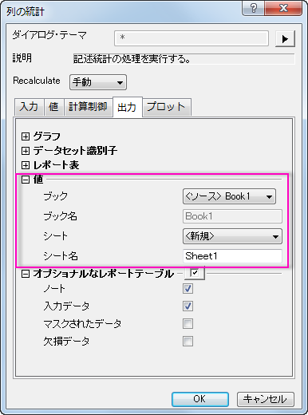

FAQ-729 統計の結果を元のワークシートの列に表示させるには？
Output-Results-Destination
最終更新日:2015/06/01
列の統計機能を使うと、列の統計を実行し、その結果を元のワークシートの新しい列に表示させることができます。
- メニューから統計：記述統計：列の統計を選択します。
- 開いたダイアログで出力タブをクリックし、値ブランチを開き、下の図のように設定してください。
- 
必要なOriginのバージョン:2016SR0
キーワード：記述統計, 元のワークシート, 平均, 標準偏差, 列